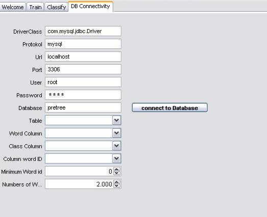
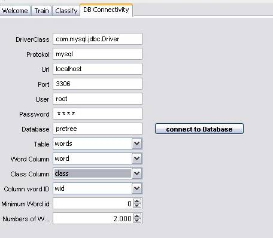
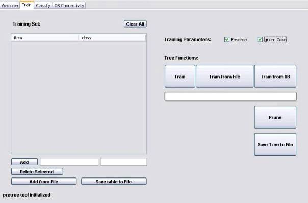
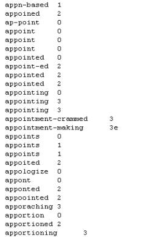
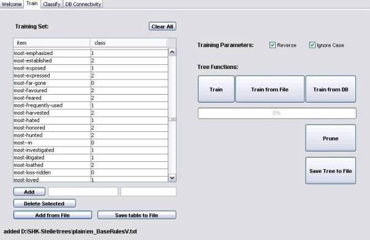
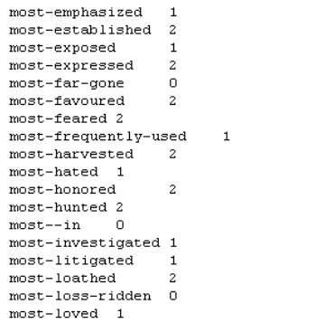
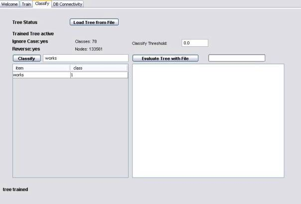
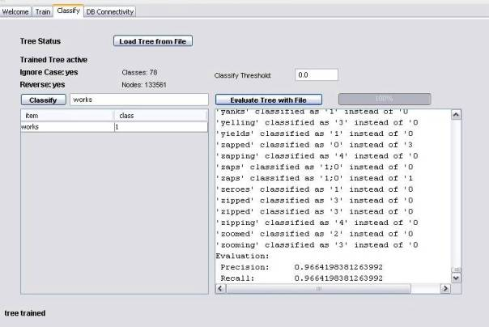

Pretree Documentation
Configure database connection:
Training a Pretree from database:
Training a Pretree from insert data:
How to use the Command Line Version
How to use Pretree in your own Programm
Installation
A
description how to install a module is available at the main
page of the ASV Toolbox project.
The line
you have to copy into the toolbox.start file looks like this:
de.uni_leipzig.asv.toolbox.pretree.PretreePanel
Introduction
Pretree classifys words
with Pretrees, evaluates your Pretree with a word set and create Pretrees from
your data.
How
to use the GUI-Version
If you start the Toolbox
and choosing the Pretree-Tool you will see a Welcome Panel looking like in
figure 1.
figure 1
Configure
database connection:
Choose
the “DB Connectivity” Panel. Enter the required in information about your
database in the text fields (see figure 2).

figure 2
Click on "connect to Database". The database information about tables
and columns will be loaded. Now choose the table containing the classified
words, the columns containing the words, the classes and the ids for the words
and choose the id of the first word an the numbers of words which should be
used from the drop-down-menus. The panel may look line in figure 3.

figure 3
Training
a Pretree from database:
Be sure that you configure
your database settings at “DB Connectivity” Panel before training a Pretree
from database. Choose ignore case option and/or reverse if it is needed for the
Pretree like in figure 4.

figure 4
Now just click on the "Train from DB"-button. The Pretree is readily
trained as soon as the progress bar under the button indicates 100%.
Training
a Pretree from file:
Choose
ignore case option and/or reverse if it is needed for the Pretree. Click the
"Train from file"-button. A new window will open for opening a file.
Choose the file with the Pretree data and open it. The progress will shown in
the progress bar under the buttons. Be sure that the file has the right format,
that means that it contains a number of lines which consists of word and
class(in this order) separated by a tab. An example file is shown in figure 5.

figure 5
Training
a Pretree from insert data:
At first you have to insert
data. For this enter the word in the left and the class in the right text field
under the table of the left side of the panel and click the
"Add"-button. You can also load a tab-separated file in the table.
Click on the "Add from File"-button and open the file containing the
data. The file should have the same format like in figure 5 above . The table
may look like in figure 6.

figure 6
For deleting a single line mark the line and click the "Delete
Selected"-button. If you want to clear the entire table click the
"Clear All"-button.
Clicking the "Save table to File"-button opens a new window. Choose
the directory and name for the file and save it. The created file which
contains the data of the table may look like in figure 7.

figure 7
Choose ignore case option and/or reverse if it is needed for the Pretree. At
least click the "Train"-button. The progress bar under the buttons
show the progress.
Prune
a Pretree:
Be sure that you have
trained already a Pretree. Now click on "Prune".
Save
the Pretree to file:
For saving the trained and
may be pruned Pretree to file click on "Save Tree to File"-button.
Choose the directory and filename in the new window and click on “save”.
Classify
a word:
Be
sure that you have trained or load a pretree. If a pretree is trained or
loaded, it will be shown with his Classes, Nodes, Reverse and Ignore Case
information over the "Classify"-button. Enter a Classify Threshold in
the text field at the right side and the word to classify in the text field at
the left side for example "works". Now click "Classify".
The word with his class will be show in the table. It may looks like in figure
8.

figure 8
Load
a Pretree from file:
You can load a Pretree file
into the Pretree-Tool. Change to the Classify Panel and click on the "Load
Tree from File"-button. In the new window, choose the file and open it.
The Pretree is now loaded. Use only Pretree files that were created with the
Pretree-Tool.
Evaluate
your Pretree:
You
can evaluate you loaded Pretree with a Pretree from file. For this click the
"Evaluate Tree with File"-button. In the new window choose the file
for the evaluation and open it. The Pretree will now be evaluated and the
progress is shown right besides the button for evaluation. The results will be
shown in textbox under the button. The result will contain all different
classified words and the precision and recall values shown in figure 9.

figure 9
How
to use the Command Line Version
java -classpath
.;./lib/ASV_Pretree.jar -Djava.ext.dirs=.;./lib
de.uni_leipzig.toolbox.pretree.PretreeTool [commands][options] [parameters]
Commands:
The following commands are
supported:
train, t: trains a pretree from a map file and save it to a tree file
java de.uni_leipzig.toolbox.pretree.PretreeTool t [options]
<mapfile> <treefile>
prune, p: prune a pretree given as a tree file and save it to another tree file
java de.uni_leipzig.toolbox.pretree.PretreeTool p [options]
<treefile_not_pruned> <treefile_pruned>
trainprune, tp: train and prune a pretree from a map file and save it to a tree
file
java de.uni_leipzig.toolbox.pretree.PretreeTool tp [options]
<mapfile> <treefile>
classify, c: classifies a word with the tree from a given tree file
java de.uni_leipzig.toolbox.pretree.PretreeTool c [options] <word>
<treefile>
convert, cv: converts trees in the given tree files in to the latest format
java de.uni_leipzig.toolbox.pretree.PretreeTool cv [options]
<treefile_0> <treefile_1> … <treefile_n>
print, pr: print out the pretrees that are given in the tree files
java
de.uni_leipzig.toolbox.pretree.PretreeTool pr [options] <treefile_0>
<treefile_1> … <treefile_n>
Options:
[options] could be replaced
through following commands
-t=#: sets the threshold
for classifying to #, this should be a value between 0 and 1
-f: can be used only with the command classify, c : instead of single word all
words from a word will are taken for classification, -f must appear directly
before the
absolute path to the
word file
the following options are only for commands train and trainprune
-rv: reverse tree
-ic: ignore case
-sc=#: character # as first “number”, default: 33
-ec=#: character # as last “number”, default: 248
-az=#: character # as number separator, default: 2
-ak=#: character # as node separator, default: 3
Examples:
- java -classpath .; ./lib/ASV_Pretree.jar
-Djava.ext.dirs=.;./lib de.uni_leipzig.asv.toolbox.pretree.PretreeTool
print ./resources/trees/de-nouns.tree
- java -classpath .; ./lib/ASV_Pretree.jar
-Djava.ext.dirs=.;./lib de.uni_leipzig.asv.toolbox.pretree.PretreeTool
classify -t=0.4 Hochhäuser ./resources/trees/de-nouns.tree
- java -Xmx500M -classpath .;
./lib/ASV_Pretree.jar -Djava.ext.dirs=.;./lib
de.uni_leipzig.asv.toolbox.pretree.PretreeTool trainprune
./resources/trees/plain/de-BaseRulesV.txt ./examples/neu-de-verbs.tree
(take some time)
How
to use Pretree in your own Programm
Classes and
Methods:
It is easy to use Pretree
for your own program. You only need the one class Pretree which you find in the package de.uni_leipzig.asv.utils.
|
class or method |
description |
|
class Pretree |
class which represent a
pretree |
|
void load(String
filename) |
load a pretree from the
given file |
|
String classify(String
word) |
returns the
classification of word related to the loaded pretree |
Example:
Here are an example of a
JAVA class(PretreeTest.java) using the Pretree tool. You can find the class
PretreeTest.java in the package de.uni_leipzig.asv.toolbox.tests.
package
de.uni_leipzig.asv.toolbox.tests;
import
de.uni_leipzig.asv.utils.Pretree;
public class
PretreeTest {
public static void main(String[]
args) {
//word for classification
String
word = "classifies";
//treshold for classification
double treshold
= 0.1;
//pretree file
String
pretreeFile = "./resources/trees/en-verbs.tree";
//pretree
Pretree
pretree = new Pretree();
pretree.load(pretreeFile);
pretree.setThresh(treshold);
System.out.println(word + " is classified as " + pretree.classify(word));
}
}
You
can start this test. Below you see the output of the test.
classifies
is classified as 3y